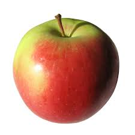
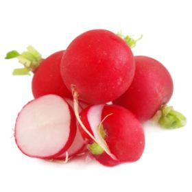

Вишня – род древесных растений семейства
розоцветных. Плод вишни – сочная костянка
с круглой косточкой, кисло-сладкого вкуса
. Ягоды ароматные, различные по размеру.
Род вишни насчитывает около 130 видов. В
зависимости от сорта ягоды вишни
бывают от розового до почти черного
цвета.
Баклажан - плод одноименного
многолетнего растения, одной из самых
популярных в мире
сельскохозяйственных культур,
выращиваемой повсеместно в
регионах с теплым климатом. Для
использования в кулинарных целях
подходят недозревшие плоды, в
зависимости от сорта могущие иметь
округлую, грушевидную или цилиндрическую
форму. Еще одним характерной
особенностью баклажана является
яркая окраска кожуры (различные оттенки
фиолетового цвета), а также гладкая или
матовая фактура поверхности.
 Тыква - популярная бахчевая культура,
представляющая собой плоды
одноименного травянистого
растения, произрастающее и
культивируемое по всему миру, в
регионах с теплым и умеренным климатом.
Плод - крупная тыквина шаровидной либо
овальной формы, покрытая твердой гладкой
коркой. Цвет, форма и размер зависят от сорта
овоща. Внутри содержится сочная мясистая
мякоть и многочисленные мелкие семена,
которые также пригодны для употребления
в пищу.
Тыква - популярная бахчевая культура,
представляющая собой плоды
одноименного травянистого
растения, произрастающее и
культивируемое по всему миру, в
регионах с теплым и умеренным климатом.
Плод - крупная тыквина шаровидной либо
овальной формы, покрытая твердой гладкой
коркой. Цвет, форма и размер зависят от сорта
овоща. Внутри содержится сочная мясистая
мякоть и многочисленные мелкие семена,
которые также пригодны для употребления
в пищу.
Самый распространенный сорт овощного
перца – Болгарский. В незрелом состоянии
его используют для фарширования,
маринования и консервирования, а
зрелые плоды желтого, оранжевого,
красного или фиолетового цвета
находят применение как в сыром, так и в
приготовленном виде.
Морковь - в кулинарии корнеплод
одноименного растения, который в
зависимости от его разновидности
может быть окрашен в различные оттенки
оранжевого цвета. Среди множества
культивируемых видов наиболее
распространенной является морковь
посевная (морковь культурная). Она, в свою очередь
делится на две основные группы сортов -
столовые и кормовые. В кулинарных целях
используется внутренняя часть мякоти,
характеризующаяся жесткой
структурой и сладковатым вкусом.
Капуста белокочанная - одна из
древнейших сельскохозяйственных культур,
выращиваемая по всему миру, в
регионах с умеренным климатом.
Представляет собой множество плотно
прижатых друг к другу листьев,
образующих вокруг стебля (кочерыжки
) крупный кочан округлой формы.
Употребляются в пищу, как в свежем, так и в
приготовленном виде.
Патиссон (тарельчатая тыква) - плод
одноименного травянистого
растения, одной из разновидностей тыквы,
популярной во всем мире
сельскохозяйственной культуры.
Представляет собой тыквину
колокольчатой или тарелочной формы. В
зависимости от сорта может быть окрашен в
различные оттенки желтого, зеленого
или белого цветов, у некоторых
экземпляров - полосами или пятнами. В
кулинарных целях используется
содержащаяся внутри мякоть, которая
употребляется в пищу после тепловой
обработки или в консервированном
виде.
Огурец - одна из самых популярных в мире
овощных культур, представляющая собой
плод одноименного травянистого
растения. В зависимости от сорта огурец
может иметь различную форму и размеры.
Большинство разновидностей
отличается продолговатой округлой
формой, изумрудно-зеленым цветом тонкой
кожицы и многочисленными
выступами. В кулинарных целях
используется содержащаяся
внутри мякоть с характерным сладковатым
вкусом.
Помидор (томат) - плод одноименного
травянистого растения, одной из самых
популярных в мире
сельскохозяйственных культур.
Существует огромное количество
сортов этого овоща, различающихся в
основном формой (от шарообразной до
цилиндрической), массой (от 30 до 800 грамм),
цветом кожицы и мякоти (различные
оттенки желтого и красного цветов).

Яблоко - плод одноименного дерева,
популярной во всем мире садовой культуры.
Внешний облик характеризуется
шарообразной формой и тонкой гладкой
кожицей, которая в зависимости от
сорта при созревании окрашивается в
различные оттенки желтого, красного и
зеленого цветов. В кулинарных целях
используется мякоть с интенсивным
вяжущим кисло-сладким вкусом и
характерным ароматом.
Слива синяя - плод овальной формы небольших
размеров. При созревании его гладкая
тонкая кожица окрашивается в
различные оттенки синего цвета. В
кулинарных целях используется
содержащаяся внутри мякоть, в
зависимости от сорта могущая иметь
сладкий или кисло-сладкий вкус. В свою очередь, крупная
косточка в пищу не употребляется.

Редис красный - в кулинарии корнеплод
одноименного растения, популярной
во всем мире сельскохозяйственной
культуры. Выращивается
преимущественно в регионах с
умеренным климатом. Внешний облик
характеризуется овальной формой,
небольшими размерами (до 3 см в диаметре
) и окраской в различные оттенки красного
цвета.